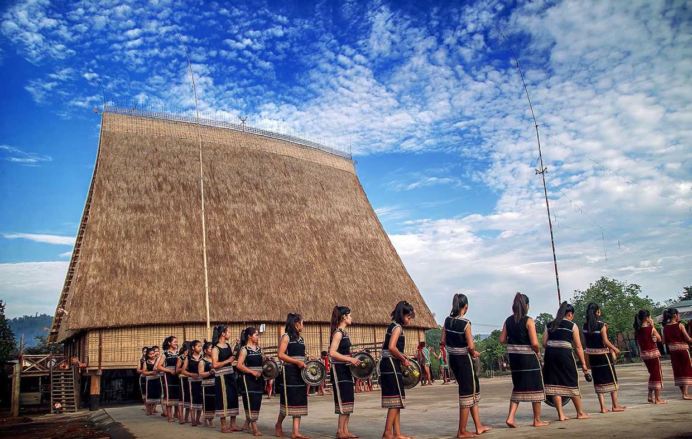

HELLO, IT'S NICE TO MEET YOU

Gia Lai là một tỉnh miền núi phía bắc của vùng Tây Nguyên, miền Trung Việt Nam và là tỉnh có diện tích lớn thứ hai Việt Nam.
Gia Lai còn có nền văn hoá lâu đời của đồng bào dân tộc,
chủ yếu là dân tộc Gia Rai và Ba Na thể hiện qua kiến trúc nhà rông, nhà sàn, nhà mồ, qua lễ hội truyền thống, qua y phục và nhạc cụ...
Các nhạc cụ đặc trưng của các dân tộc thiểu số như Cồng chiêng, Đàn đá, Đàn K'ni, K'lông pút, Đàn Goong, T'rưng, Alal,... Các lễ hội như Lễ hội đâm trâu,
Lễ ăn cơm mới, Lễ bỏ mả,...
Ngoài ra, tỉnh còn có các món đặc sản như Rượu cần, Cơm cháy - Rượu nếp, Phở khô (Loại phở hai tô) và điêu khắc nổi tiếng là Tượng nhà mồ.
Ẩm thực Gia Lai không chỉ phong phú, đa dạng về món ăn mà còn mang nét văn hóa tiêu biểu đặc sắc hiện hữu rõ nét ở cách ăn, kiểu ăn, phong cách ăn..
từ cách chế biến, trình bày, cách trang trí cũng như cách thưởng thức từng món ăn.
Món ăn này phải ăn kèm với rau gì, gồm những gia vị gì, nấu như thế nào mới ngon phù hợp với khẩu vị của người ăn.
Điểm quanh một vòng những món ăn ngon đặc sắc tại Gia Lai chắc chắn sẽ làm cho chuyến du lịch của du khách trở nên thú vị và hấp dẫn hơn nhiều.
Ẩm thực Gia Lai mang nét đặc trưng rất riêng, tuy bên ngoài có vẻ đơn sơ, mộc mạc nhưng bên trong lại nhẹ nhàng, ngọt ngào và sâu lắng.
Khi nhắc đến ẩm thực Gia Lai, mọi người chắc chắn sẽ
nghĩ đến những món ăn đặc sản nổi tiếng như: Phở 2 tô, bún mắm cua, bò một nắng, lẫu rau rừng, gà nướng cam lam, gỏi lá rừng, cà phê, mật ong rừng, nấm linh chi…
Chỉ cần một lần đặt chân đến mảnh đất Gia Lai, mọi du khách đều sẽ bị mê hoặc bởi thiên nhiên núi rừng hùng vĩ, con người thân thiện và nhiều món ăn hấp dẫn.
Và điều mà nhiều du khách cảm thấy tò mò nhất chắc hẳn là đặc sản Gia Lai phải không nào? Vậy vùng đất này có những món ăn nào hấp dẫn du khách.
Hãy để VN Foods giúp bạn hiểu hơn về văn hoá ẩm thực nơi đây nhé!